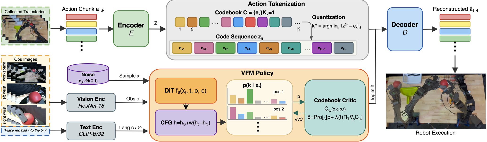
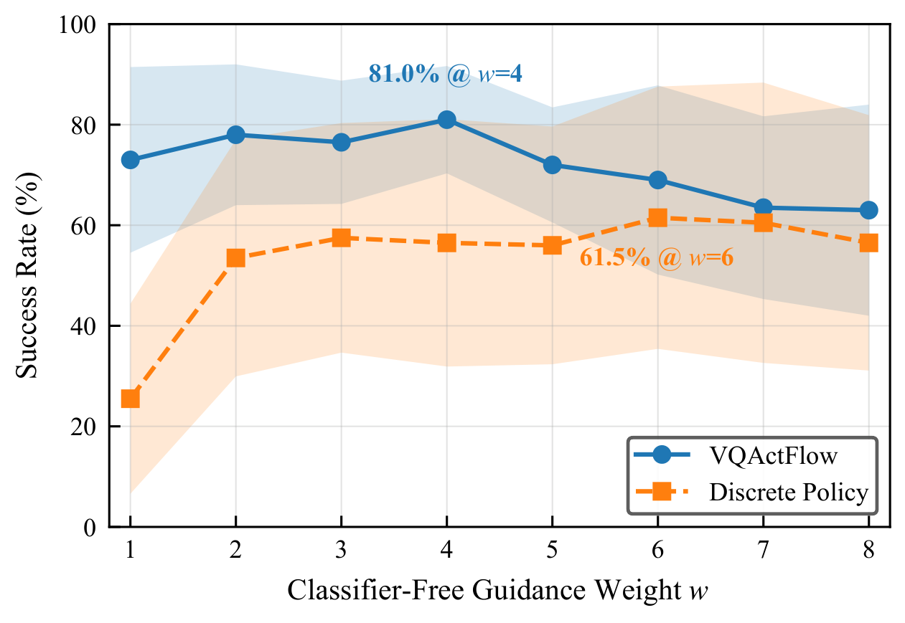

In multi-task manipulation, a policy has to commit to the action mode that matches the current instruction. Pick the wrong mode and the robot does the wrong task. VQActFlow tokenizes action chunks into a discrete codebook and generates the codes with Variational Flow Matching, so it carries a distribution over action modes through every step of generation. At inference time, classifier-free guidance and a learned codebook critic reshape that distribution. Neither one retrains the policy.
How VQActFlow represents and steers actions

Most flow-matching policies work in a continuous space with no explicit notion of action mode, so guidance can only reshape a single continuous distribution. VQActFlow instead carries a discrete distribution over action modes through generation, which gives guidance a categorical target to act on from the first step to the last.
-
1
CFG on language conditioning. At every step it extrapolates between the conditional and unconditional logits, which sharpens how firmly the policy commits to the instructed task.
-
2
A learned codebook critic. A small transformer, trained contrastively, scores how feasible each code is and pushes the distribution toward feasible modes.
Both operate on the same categorical distribution, so you can apply them together, and neither one needs extra training.
A G1 humanoid, a bimanual platform, and LIBERO in simulation
Across all three platforms, VQActFlow beats both continuous and discrete baselines trained on the same encoder, data, and step budget.
Humanoid whole-body manipulation
A Unitree G1 with two dexterous hands runs four pick-and-place tasks in one shared workspace; only the target object and the instruction change.
| CFG weight | Success | Missed grasp | Wrong task |
|---|---|---|---|
| w=1 | 23.8 | 35.0 | 41.3 |
| w=6 | 57.5 | 40.0 | 2.5 |
Almost all of CFG's gain here comes from fixing wrong-task errors, which fall from 41.3% to 2.5%. It helps the policy choose the right task; it does not make the motion itself any cleaner.
A CFM policy trained the same way (same DiT backbone, data, and training protocol) converges in training but oscillates in every G1 rollout and never completes a grasp, with or without CFG. The oscillation shakes the robot's torso, so we stopped its evaluation early for safety and count its success rate as 0%.
Bimanual manipulation
Two ALOHA-style arms on four contact-rich tasks, three of them needing coordinated bimanual use.
| Method | w | λ | Battery | Duck | Cylinder | Ball | Avg. |
|---|---|---|---|---|---|---|---|
| Discrete Policy | 1 | – | 53±7.6 | 54±8.9 | 68±4.5 | 68±4.5 | 60.8±5.0 |
| Discrete Policy | 4 | – | 64±5.5 | 71±5.5 | 78±4.5 | 70±10.0 | 70.8±2.9 |
| VQActFlow | 1 | 0 | 60±7.9 | 76±5.5 | 77±7.6 | 55±11.2 | 67.0±4.9 |
| VQActFlow | 1 | 1 | 67±2.7 | 77±4.5 | 84±9.6 | 63±11.0 | 72.8±2.7 |
| VQActFlow | 4 | 0 | 74±4.2 | 80±3.5 | 85±7.9 | 75±15.4 | 78.5±4.5 |
| VQActFlow | 4 | 1 | 76±4.2 | 85±5.0 | 90±6.1 | 79±6.5 | 82.5±3.0 |
Each row is 400 real-robot rollouts, run in five sessions on different days. With CFG and the critic, VQActFlow beats Discrete Policy at the same weight by 11.7 points (95% CI [7.4, 16.0], p < 0.001). The critic raises success on every task at both weights (8 of 8 comparisons, sign test p = 0.008), though neither average gain is significant on its own at this number of trials. Ball varies most between sessions because the red ball is sensitive to lighting. These results use a revised gripper: after the change we re-collected about 100 demonstrations per task and retrained every policy.
With the same backbone, a continuous flow-matching baseline fails all four tasks. Its joints oscillate violently, roughly two orders of magnitude rougher than VQActFlow.
| Configuration | Unguided | CFG | Critic | CFG + critic |
|---|---|---|---|---|
| Inference time | 155.2 | 288.9 | 216.7 | 350.2 |
350 ms fits comfortably inside the 1.28 s budget per action chunk, and asynchronous inference computes the next chunk while the current one runs.
CFG on LIBERO-Goal
Guiding the discrete distribution directly works better than guiding a continuous approximation of it.

Multi-task scaling on LIBERO-90
At this scale, CFG and the codebook critic each contribute their own gains, and the gains mostly stack.
| Method | Type | CFG w | Critic λ | Success |
|---|---|---|---|---|
| MT-ACT | Continuous | – | – | 72.2±0.2 |
| CFM | Continuous | – | – | 76.2±1.2 |
| CFM | Continuous | 2.0 | – | 78.3±0.9 |
| VQ-BeT | VQ-based | – | – | 23.0±1.3 |
| Discrete Policy | VQ-based | 1.0 | – | 49.8±1.2 |
| Discrete Policy | VQ-based | 2.0 | – | 60.8±1.0 |
| VQActFlow | VQ-based | 1.0 | 0.0 | 71.8±0.7 |
| VQActFlow | VQ-based | 1.0 | 1.0 | 74.2±1.5 |
| VQActFlow | VQ-based | 2.0 | 0.0 | 76.6±1.5 |
| VQActFlow | VQ-based | 2.0 | 1.0 | 79.3±1.1 |
CFG helps both kinds of policy: at w=2 it adds 2.1 points to CFM and 4.8 to VQActFlow. The critic adds 2.4 points on its own and 2.7 more on top of CFG. VQActFlow's 1.0-point margin over CFM with CFG (95% CI [−0.5, 2.4]) is within noise, while its margins over the other baselines are significant.
| Codebook size | 128 | 256 | 512 | 1024 |
|---|---|---|---|---|
| Success rate | 63.7±0.8 | 67.3±0.2 | 71.8±0.7 | 70.6±0.7 |
Success peaks at K=512. Smaller codebooks limit how finely actions can be quantized; larger ones blow up the per-position classification space and make the categorical prediction harder to learn.
| Method | CFG w | Critic λ | Seed 1000 | Seed 2000 | Seed 3000 | Mean ± std |
|---|---|---|---|---|---|---|
| CFM | – | – | 75.9 | 76.0 | 74.2 | 75.4±1.0 |
| VQActFlow | 1.0 | 0.0 | 72.6 | 72.1 | 71.9 | 72.2±0.3 |
| VQActFlow | 1.0 | 1.0 | 74.4 | 73.8 | 73.5 | 73.9±0.5 |
| VQActFlow | 2.0 | 0.0 | 78.9 | 79.1 | 78.0 | 78.7±0.6 |
| VQActFlow | 2.0 | 1.0 | 80.9 | 80.3 | 78.5 | 79.9±1.3 |
Results hold across training seeds. The spread across three independently trained models (0.3–1.3 points) is no larger than the spread across evaluation seeds in Table IV. Across the retrained models, CFG adds 6.5 points (95% CI [5.3, 7.6]) and the critic adds 1.7 at w=1 ([1.5, 1.9]). On top of CFG the critic helps for all three seeds (+2.0, +1.2, +0.5), though three seeds are too few to resolve that gain.
| CFG weight w | 1.0 | 1.5 | 2.0 | 3.0 | 4.0 |
|---|---|---|---|---|---|
| Success rate | 71.9±1.0 | 76.4±0.9 | 77.1±1.7 | 72.4±0.4 | 67.8±1.0 |
| Change vs. w=1 | – | +4.5 | +5.1 | +0.4 | −4.2 |
The response to guidance has the same shape as on LIBERO-Goal: clear gains at w=1.5 and 2, none at w=3, and a loss at w=4 (95% CI [−7.4, −0.9]). The w=2 used here sits at the optimum, and the plateau from 1.5 to 2 means the choice needs no fine tuning. Each benchmark uses one w for all of its tasks, picked by a coarse sweep. Benchmarks whose tasks share one fixed scene (LIBERO-Goal, the G1, the bimanual platform) need stronger guidance, because only the instruction tells their tasks apart.
| Critic weight λ | 0 | 0.5 | 1 | 2 | 3 |
|---|---|---|---|---|---|
| Success rate | 71.9 | 74.0 | 75.0 | 74.3 | 74.9 |
Every λ from 0.5 to 3 beats running without the critic by 2–3 points in every evaluation seed, and no two values are separable, so the result does not depend on a finely tuned critic weight.
| Guidance | Task ID | Language | Δ [95% CI] |
|---|---|---|---|
| w=1, λ=0 | 60.6±0.9 | 71.8±0.7 | −11.3 [−12.5, −10.1] |
| w=1, λ=1 | 62.4±1.9 | 74.2±1.5 | −11.8 [−14.2, −9.3] |
| w=2, λ=0 | 72.7±0.9 | 76.6±1.5 | −3.9 [−5.8, −2.0] |
| w=2, λ=1 | 74.1±1.0 | 79.3±1.1 | −5.2 [−6.7, −3.7] |
Replacing the instruction with a learned task ID, one per unique instruction (74 IDs, so both carry the same information), lowers success at every guidance setting: by 11.3 points at w=1 and 3.9 at w=2. The policy uses what the instruction says, not just which instruction it is. CFG closes part of the gap, and the critic still helps with task IDs (+1.8 at w=1, +1.4 at w=2). All instructions here were seen in training; generalization to new instructions is not tested.
What the codebook critic learns
The critic is trained only on demonstrations and constructed negatives. On LIBERO-90 we check whether its scores track real rollout outcomes, and which negatives its guidance depends on.
| Scored unit | w=1 | w=2 |
|---|---|---|
| Action chunks (successful vs. failed) | 0.83 | 0.82 |
| Episodes (mean chunk score vs. outcome) | 0.97 | 0.96 |
We scored 4,500 rollouts per guidance weight, labeling each action chunk as failed if it falls at or after the point where a failed episode goes wrong. The ranking also holds within each task: the per-task AUROC averages 0.85 at w=1 and 0.83 at w=2, and all 90 tasks are above chance.
| Critic | Negatives | Ranking | Task disc. | Success |
|---|---|---|---|---|
| No critic | – | – | – | 76.9 |
| All seven (used in the paper) | L V O X R S T | 0.82 | 0.97 | 78.8 |
| Leave one family out | ||||
| No language | V O X R S T | 0.78 | 0.96 | 79.0 |
| No observation | L X R S T | 0.83 | 0.96 | 78.2 |
| No temporal | L V O X R | 0.81 | 0.96 | 78.8 |
| No code replacement | L V O S T | 0.83 | 0.96 | 66.4 |
| No conditioning (L, V, O) | X R S T | 0.80 | 0.68 | 78.7 |
| Subsets | ||||
| Code matching only | V O R S T | 0.75 | 0.94 | 77.8 |
| Code corruptions only | R S | 0.75 | 0.60 | 76.3 |
| Corruptions and shift only | R S T | 0.75 | 0.59 | 76.7 |
| Language only | L | 0.77 | 0.98 | 76.8 |
| Language and swap only | L X | 0.81 | 0.97 | 73.9 |
Ranking outcomes well is not the same as guiding well. The critic trained without code-replacement negatives ranks rollouts as well as the full critic (0.83) but, used as guidance, drops success to 66.4%. Random replacement (R) and cross-demonstration swap (X) are the only negatives that put codes from outside the episode at a fixed observation and instruction, and the gradient needs both: keeping them without any conditioning negatives retains the full gain (78.7). The language and observation negatives supply task discrimination (0.97 with them, 0.68 without) but are not needed for the success gain, since CFG already conditions on the task. The critic's useful signal is feasibility: whether an action is right for this instruction in this scene.
BibTeX
@article{anonymous2026vqactflow,
title={VQActFlow: Vector-Quantized Action Mode Steering for Multi-Task Robot Manipulation},
author={Anonymous Author(s)},
journal={Under review},
year={2026}
}